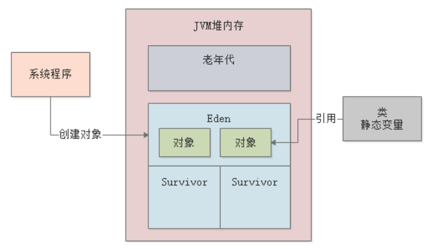
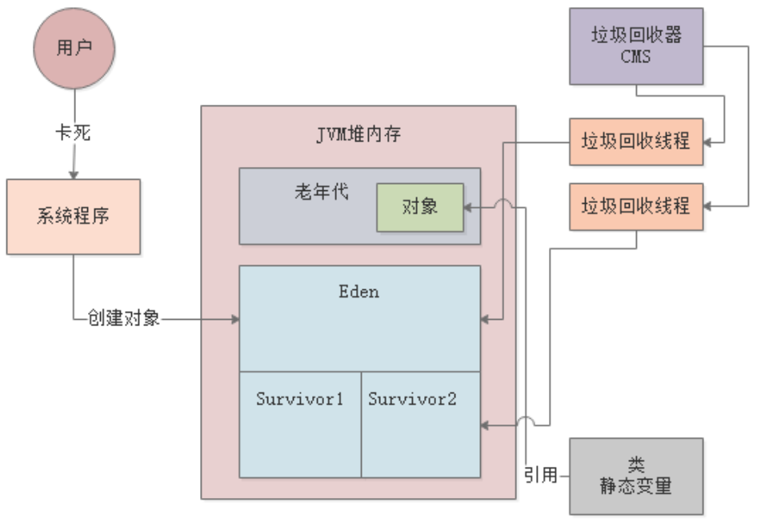

JVM实战（13）——JVM优化概述
一、简介
本章，我们先来对系统运行过程中可能会遇到的各种JVM性能问题作个概述，以此为引子，作为后续实战篇的铺垫。
JVM性能优化其实就是针对JVM内存分配、参数设置进行优化，目的是减少GC次数，避免对象频繁进入老年代。所以，我们来先来回顾下新生代和老年代的垃圾回收过程，并看下可能会引发的各种JVM性能问题。
在正式开始之前，我先给出一份JVM调优模板，这份模板基本上涵盖了JVM调优所需的所有核心参数，后续我们所有的调优也会围绕它展开：-Xms4096M -Xmx4096M -Xmn3072M -Xss1M -XX:MetaspaceSize=256M -XX:MaxMetaspaceSize=256M -XX:+UseParNewGC -XX:+UseConcMarkSweepGC -XX:CMSInitiatingOccupancyFaction=92 -XX:UseCMSCompactAtFullCollection -XX:CMSFullGCsBeforeCompaction=0 -XX:CMSParallellInitialMarkEnabled -XX:CMSScavengeBeforeRemark -XX:DisableExplicitGC -XX:PrintGCDetail -Xloggc:gc.log -XX:+HeapDumpOnOutOfMemoryError -XX:HeapDumpPath:/usr/local/app/oom.hprof
上述有些参数看不懂没关系，我们在后续的各个实战章节中都会陆续提到，这里先简要说下：
首先，JVM中各块内存区域大小的分配是根据系统运行模型来配置的，然后是ParNew和CMS这两种垃圾回收器的配置，特别注意CMS的一些参数，主要是提升CMS的效率和性能，还有就是打印GC日志，日志可以借助后续章节会讲到的jstat工具进行分析，最后两个参数是在发生内存溢出异常时，自动dump出内存快照，然后就可以通过MAT等工具进行分析了。
二、JVM性能问题
JVM运行时，最核心的区域就是Java堆内存，这里会存放我们系统创建出来的各种对象。而且堆内存通常划分为新生代和老年代，新生代存放新创建出来的各种对象。所以，我们先来看下新生代GC会有哪些问题。
2.1 新生代GC
随着系统的不断运行，新生代中的对象会越来越多，直到快被塞满。此时会根据GC Roots去寻找存活的对象。GC Roots一般是类静态变量或方法的局部变量。由于我们创建对象最多的地方是在方法内，方法运行完毕，局部变量就没有了，所以新生代中这种对象其实占了99%，这也是新生代对象存活率低的原因。

新生代进行Minor GC时，会采用复制算法，将Eden区和一块Survivor区的存活对象复制到另一块Survivor区，然后清空Eden和之前的Survivor。同时，新生代GC期间会”Stop the World“，即只允许GC线程进行回收工作，其它工作线程都会被挂起。

假设一次新生代的GC需要20ms，那么此时对于用户发送的请求，这20ms内是无法处理的，系统会卡顿20ms。但是新生代的GC速度非常快，所以只要不频繁GC，其实对系统是没什么影响的。所以，新生代GC其实没什么好调优的，只要多分配点堆内存，保证Survivor区空间充足，那么低峰时期一般几小时才有一次新生代GC，高峰期也最多几分钟一次新生代GC。
那么，什么时候新生代GC会对系统产生很大的影响呢？
当系统部署在大内存机器上时，比如32核64G的机器，新生代的Eden区可能有32G以上的内存。
此时，如果系统的负载特别高（比如部署了Kafka、Elasticsearch每秒处理上万的请求），那么可能导致Eden区的几十G空间在短短几分钟内被塞满。而此时进行新生代GC会停止系统的运行，由于新生代空间非常大，GC时间会很长，可能长达数秒钟。
对于一个高负载高并发的系统，每隔几分钟就停顿几秒去进行新生代GC，是不可接受的。
解决方案一般就是使用G1垃圾回收器，因为G1可以设置一个预期停顿时间（比如20ms），那么G1基于它的Region内存划分原理，就可以在运行一段时间之后，回收一部分Region，控制时间在20ms内，然后再运行再回收。
所以，G1天生就适合在这种大内存的机器上运行，可以完美解决大内存垃圾回收时间过长的问题。
2.2 老年代GC
之前给大家讲过新生代中对象晋升到老年代的几个可能条件：
- 年龄太大
- 符合动态年龄判断规则
- 大对象
- 新生代GC后存活的对象放不下Survivor区
上述条件中，关键是动态年龄判断和对象放不下Survivor区，从而导致大量对象频繁进入老年代：

老年代GC非常耗时，无论是CMS还是G1。通常老年代GC要比新生代GC慢十倍以上，所以针对老年代GC的优化还是要先从新生代GC入手，合理分配内存和设置JVM参数，尽量让对象不要频繁进入老年代。
三、各种GC分类
在基础篇，我们介绍过各种GC类型，Minor GC、Full GC、Mixed GC、Young GC等等。本节我们就来统一梳理下。
3.1 Minor GC/Young GC
当新生代的Eden区域被占满后，实际就需要触发新生代的GC，这就是所谓的”Minor GC“，也可以称之为”Young GC“。后续章节，我们统一用Young GC指代新生代的GC。
触发时机：新生代的Eden区域被占满后。
3.2 Full GC/Old GC
Old GC是仅仅针对老年代区域进行垃圾回收。而Full GC则是针对新生代、老年代、永久代的全体内存空间进行垃圾回收。后续章节，我们统一用Old GC指代老生代的GC。
触发时机：老年代空间不够。具体时机可细分为以下几种：
- 进行Young GC之前：如果老年代的连续可用内存空间 < 新生代历次晋升的平均大小，此时先触发一次Old GC清理老年代，然后再执行Young GC。
- 进行Young GC之后：如果存活对象要进入老年代，但是老年代的连续可用内存空间 < 存放对象的大小，此时必须触发一次Old GC。
- 老年代的内存使用率超过了92%，此时也会触发Old GC。
在很多JVM的实现机制里，当上述几种条件达到时，实际触发的其实是Full GC，这个Full GC会包含Young GC、Old GC和永久代GC。
3.3 Mixed GC
Mixed GC是G1垃圾回收器中特有的概念，在G1中，一旦老年代占据了Java堆内存的45%，就会触发Mixed GC，此时对新生代和老年代都进行垃圾回收。
触发时机：G1特有，老年代空间占据到Java堆内存的45%。
3.4 永久代GC
永久代一般存放着类信息、常量池等等。在进行Full GC的时候，会顺带对永久代进行GC，一般来说永久代里的东西是不需要回收的，如果永久代真的满了，回收之后也没腾出足够的空间来，就会抛出OOM异常。